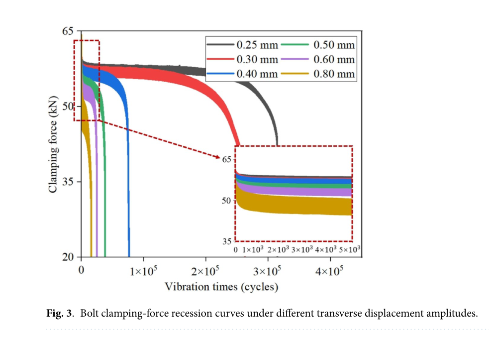
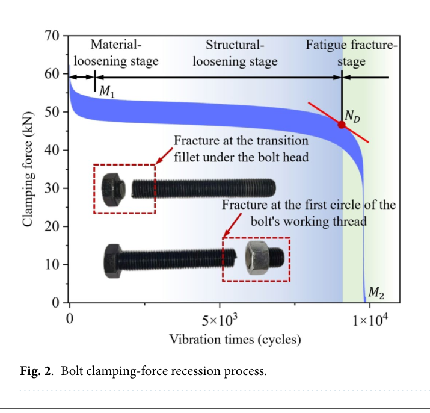

Liu 2025 — estudo de caso— case study
M16 8.8, cisalhamento transversal, 6 amplitudes (Sci. Rep.)M16 8.8, transverse shear, 6 amplitudes (Sci. Rep.)
Figura do artigoPaper figure


Figura(s) originais do artigo (recorte do PDF) — a fonte dos pontos que foram digitalizados.Original figure(s) from the paper (PDF crop) — the source of the digitized points.
Condições do ensaioTest conditions
| ReferênciaReference | Liu et al. (2025). Sci. Rep. 15 (s41598-025-02936-6) · doi:10.1038/s41598-025-02936-6 |
| ParafusoBolt | M16x2.0 |
| Pré-carga F0Preload F0 | 60 kN |
| AmplitudeAmplitude | ±0.25–0.80 mm |
| FrequênciaFrequency | 12.5 Hz |
| Família / nº de curvasFamily / curves | transverse · 7 |
| MAE medianomedian | 0.034 |
⚠ ensaio até fratura — cauda fora do afrouxamento puro
Informações do artigo — aparato, corpo-de-prova, matriz de ensaiosPaper information — apparatus, specimen, test matrix
Liu 2025 (Sci. Rep.) — M16 transverse loosening-life tests
Citation: Liu et al., "Bolt loosening evaluation method based on normalized screw root equivalent stress and loosening life curve", *Scientific Reports* 15 (2025). DOI: 10.1038/s41598-025-02936-6 (open access, CC BY-NC-ND) PDF: pdfs_open_access/liu2025_scirep_M16.pdf (= BAS_V2_papers/A.../Bolt loosening evaluation method...pdf)
Apparatus
- Transverse (shear) displacement-controlled loosening test on a servo test machine;
specimen clamped in a high-stiffness L-type fixture, ends mounted on the fixed and actuating heads of the machine.
- PTFE/lubricating-oil treatment on fixture contact faces to remove parasitic fixture
friction; alignment groove machined in the fixture side to keep fit clearance consistent.
- Load train (series): bolt → small gasket → fixture → **EVT-14 TP-12T pressure (clamp-force)
sensor** → large gasket. Small gaskets on the sensor side to distribute pressure evenly.
- Preload applied with a torque wrench, controlled against the pressure sensor reading.
- Clamp force recorded in real time by a **DH5902N portable data collector @ 200 Hz
sampling**; each test ran until bolt fracture.
- Excitation frequency is not reported numerically (only the 200 Hz sampling rate).
Specimen
- M16 × 120 mm, grade 8.8 high-strength hex bolts + nut, black finish.
- Failure locations observed: transition fillet under the bolt head, or first engaged
thread circle (Fig 2 inset photos).
Trial matrix
| Test | Bolt | F0 | Transverse amplitude | Cycles to end | Clamp-force oscillation amplitude |
|---|---|---|---|---|---|
| Fig 3 family | M16x120 8.8 | 60 kN | 0.25 mm | ~3.3x10^5 (fracture) | 1.4 kN |
| 60 kN | 0.30 mm | ~2.5x10^5 | 1.9 kN | ||
| 60 kN | 0.40 mm | ~7.7x10^4 | 2.1 kN | ||
| 60 kN | 0.50 mm | ~3.8x10^4 | 2.6 kN | ||
| 60 kN | 0.60 mm | ~2.4x10^4 | 2.8 kN | ||
| 60 kN | 0.80 mm | ~1.4x10^4 | 6.3 kN | ||
| Fig 2 (single, 3-stage demo) | M16x120 8.8 | 60 kN | NOT REPORTED (see caveat) | ~1.0x10^4 (fracture) | — |
> [CORRECAO 2026-07-28] A amplitude do ensaio da Fig. 2 NAO e declarada no artigo. > O texto diz apenas *"a typical clamping-force recession process of a bolt under the > action of a transverse load"*. A leitura anterior desta tabela — *"high-amp test > (~0.8 mm class)"* — era inferencia nossa, nao dado do paper, e foi usada como se > fosse medida. > > Consequencia medida: a comparacao fig2 (10 k ciclos) vs amp0p8 (14,4 k) foi > citada como "44 % de dispersao de especime na mesma amplitude nominal" em > MODEL_LEGITIMACY §4.44a/§4.45–§4.48 e em varios pre-registros. Esse numero nao esta > estabelecido: pela propria lei D-N do artigo (N ∝ δ^-2,7), uma amplitude nao > reportada apenas 14,5 % maior (0,916 mm) explica a diferenca INTEIRA com zero > dispersao. Ver New_Theory/liu2025_estudo_modelagem.md §4.2. > > Ao citar dispersao desta fonte, usar o numero defensavel: ±17 % de erro de vida com > uma unica lei de potencia sobre a tensao de raiz (R²(log) = 0,9894, 6 amplitudes).
| Fig 9 bench test (Bolts I & II) | M16x120 8.8 | 60 kN | bench vibration 12 h | ends at 94% / 91.5% F0 | — |
Stage labels (Fig 2): material-loosening stage (ends M1 ~7x10^2 cycles) → structural-loosening stage → fatigue-fracture stage (N_D knee, then collapse to 0 at fracture M2).
Digitized curves
| CSV | Figure | Condition | pts | F/F0 range |
|---|---|---|---|---|
| liu2025_M16_amp0p25.csv | Fig 3 | 0.25 mm | 18 | 1.000 → 0.675 |
| liu2025_M16_amp0p3.csv | Fig 3 | 0.30 mm | 15 | 1.000 → 0.683 |
| liu2025_M16_amp0p4.csv | Fig 3 | 0.40 mm | 16 | 1.000 → 0.330 |
| liu2025_M16_amp0p5.csv | Fig 3 | 0.50 mm | 14 | 1.000 → 0.330 |
| liu2025_M16_amp0p6.csv | Fig 3 | 0.60 mm | 13 | 1.000 → 0.330 |
| liu2025_M16_amp0p8.csv | Fig 3 | 0.80 mm | 12 | 1.000 → 0.330 |
| liu2025_M16_fig2_single.csv | Fig 2 | single 3-stage test to fracture | 16 | 1.000 → 0.000 |
Digitization caveats
- Curves are plotted as thick oscillation envelopes (band width = the clamp-force
variation amplitudes above); CSVs track the band center. Estimated reading error ±0.02 in F/F0, ±3% in cycle placement.
- Normalized by nominal F0 = 60 kN. The plotted traces start at ~62 kN (tightening
overshoot); CSVs pin cycle 0 to F/F0 = 1.0.
- Early-cycle points (< 5x10^3) anchored on the Fig 3 inset (0–5x10^3 zoom).
- 0.40–0.80 mm curves exit the plot bottom (20 kN, F/F0 = 0.33) in near-vertical collapse —
last CSV point is the plot boundary, not the physical end (fracture).
- Fig 2's amplitude is not explicitly labeled; its timeline (~10^4 cycles to fracture)
matches the 0.8 mm class. Treat as a separate specimen, not one of the Fig 3 tests.
V2 calibration mapping
- Only M16 source in the library — native size of the nova/reusada/sobretorque/reaperto
shear profiles (those are M16 ±0.5 mm; this is M16 8.8 at 0.25–0.8 mm sweep).
- Initial fast drop (60→~57.5 kN in <10^3 cycles) →
k_emb_scale. - Long quasi-plateau slope per amplitude →
k_wear_scale_tr(+Phi_tr_correctionvia
amplitude scaling).
- Stage boundaries (M1, N_D) and the amplitude-dependent incubation →
slip_onset_W. - Final re-accelerated collapse →
surface_damage(c_D, k_dmg_mu, k_dmg_wear); the family
at fixed F0 = 60 kN is the best cross-condition set for staged fitting in disp-mode (step_cycle(delta_amp=...)).
- Caution: fatigue-fracture stage (post-N_D) mixes crack growth with loosening — for pure
loosening calibration, weight cycles < N_D higher (use the calibration dialog trim window).
Modelo vs dadoModel vs data
Cada card = uma curva digitalizada deste estudo: a linha é a previsão do modelo (config adotada, do store canônico) e os pontos são o dado medido; o badge traz o MAE.Each card = one digitized curve from this study: the line is the model prediction (adopted config, from the canonical store) and the dots are the measured data; the badge shows the MAE.
ReprodutibilidadeReproducibility
Cada card tem ↓ CSV (modelo + dado da curva). Os CSVs digitalizados originais ficam em Models/CALIBRATION_AND_VALIDATION/curve_library/digitized_csv/; a curva do modelo vem do store canônico (config adotada por fonte). Para reproduzir localmente:Each card has ↓ CSV (curve model + data). The original digitized CSVs live in Models/CALIBRATION_AND_VALIDATION/curve_library/digitized_csv/; the model curve comes from the canonical store (adopted per-source config). To reproduce locally:
Ver também o guia de uso do programa e a metodologia.See also the program usage guide and the methodology.